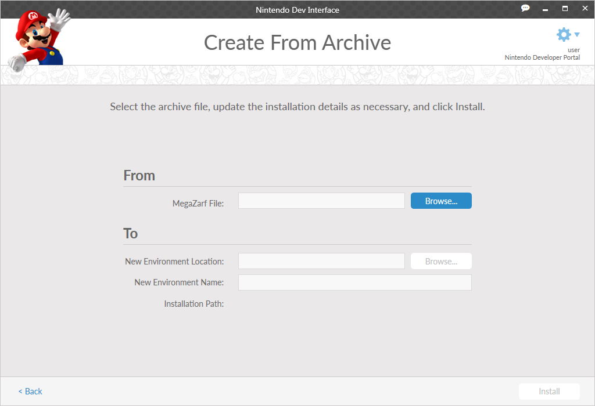

This screen is used to create an environment using a MegaZarf file. A MegaZarf file contains all the information that is required to recreate an environment that was previously created in NDI.
Under From, the MegaZarf File field specifies the MegaZarf used to create the environment, including the directory path to the file location. Use the Browse button to navigate to and select the MegaZarf in your file system.
Under To, specify the New Environment Location and the NewEnvironment Name.
Two environments with identical names cannot reside in the same location.
When creating a MegaZarf, the user can choose to require the MegaZarf to be installed with a particular name or in a particular location. In such a case, the fields are prepopulated and you will be unable to modify them.
Double-click on a MegaZarf from your desktop to open NDI to this screen with the MegaZarf already selected.
CONFIDENTIAL